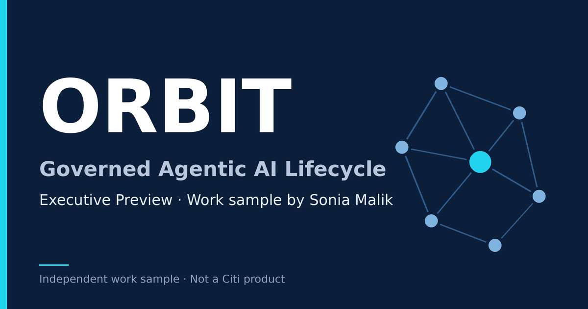

ORBIT
Governed Agentic AI Lifecycle — Executive Preview
ORBIT is an independent work sample by Sonia Malik, prepared for hiring-team review. It outlines how she would run a governed, agentic AI lifecycle in a regulated bank. It is not a Citi system and is not affiliated with Citi.

Opens on claude.ai. If prompted, complete the quick browser check.